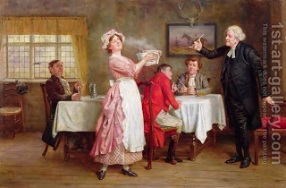

Shevuot (Oaths) 13 - Eating and Working on Yom Kippur
The goat sacrifice, whose blood is brought inside the Holy of Holies, atones for all transgressions related to ritual purity, whether performed by mistake or deliberately. The goat that is sent away atones for all sins, whether done by mistake or deliberately - provided that the person repents. Greater than this is the day of Yom Kippur itself, which atones for all transgressions between man and God, again, provided that the man repents.
Rabbi Yehudah the Prince has an exceptional opinion that Yom Kippur atones even for the person who does not repent (with three exceptions: denying the existence of Creator, speaking insolently of the Torah, and refusing to be circumcised). But according to Rabbi Yehudah, how is it at all possible to deserve being cut off - which the Torah promises for eating and working on Yom Kippur - if the last moment of it effects atonement? - It would apply to one who who eats, chokes, and immediately dies in the middle of Yom Kuppur, or alternatively to one who keeps eating at the end of Yom Kuppur.
Art: George Goodwin Kilburne - To Crown the Feast